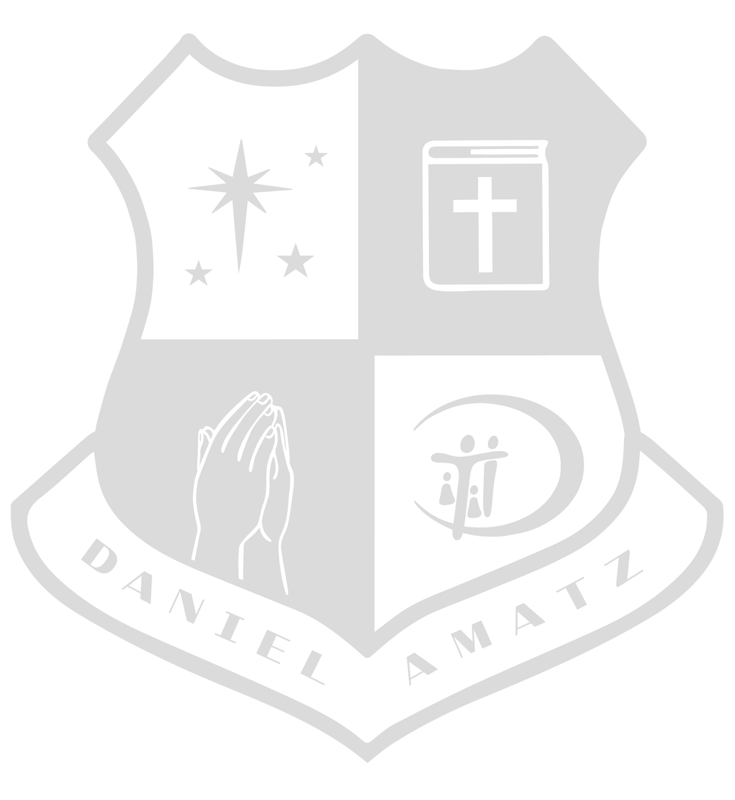

🗓️
시간표를 불러오는 중…
잠시만 기다려 주세요.
📭
지금 게시된 시간표가 없습니다
새 시간표가 게시되면 이 링크에서 바로 볼 수 있어요.
잠시 후 다시 확인해 주세요.
🔍
시간표를 찾을 수 없어요
링크가 정확한지 확인해 주세요.
공유가 중단되었거나 링크가 바뀌었을 수 있습니다.
학교에 새 링크를 요청해 주세요.

완성 시간표
🖼️ 이미지 저장
본 시간표는 학교가 게시한 최신 내용입니다 · 문의는 담당 선생님께